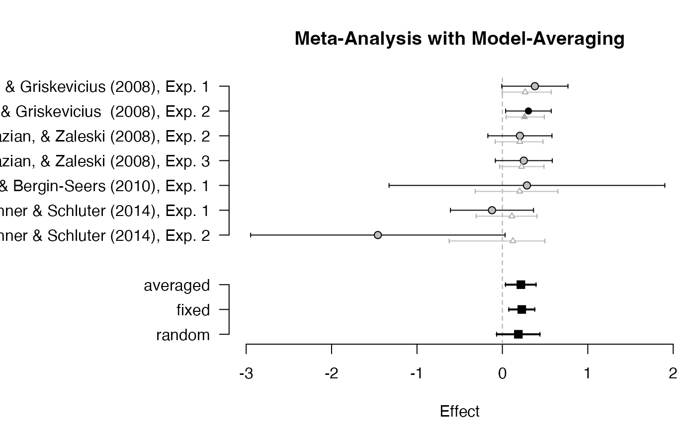

Wrapper with default prior for Bayesian meta-analysis. Since version 0.6.6, the default priors for Cohen's d have been changed from a normal distribution with scale=0.3 to a Cauchy distribution with scale=0.707. Moreover, scale adjustments were implemented when using Fisher's z or log odds-ratios.
meta_default(y, SE, labels, data, field = "psychology", effect = "d", ...)
| y | effect size per study. Can be provided as (1) a numeric vector, (2)
the quoted or unquoted name of the variable in |
|---|---|
| SE | standard error of effect size for each study. Can be a numeric
vector or the quoted or unquoted name of the variable in |
| labels | optional: character values with study labels. Can be a
character vector or the quoted or unquoted name of the variable in
|
| data | data frame containing the variables for effect size |
| field | either |
| effect | the type of effect size used in the meta-analysis: either
Cohen's d ( |
| ... | further arguments passed to |
The prior distribution depends on the scale of the effect size that is used in
the meta-analysis (Cohen's d, Fisher's z, or log odds ratio). To ensure that
the results are comparable when transforming between different effect sizes
(e.g., using the function transform_es), it is necessary to
adjust the prior distributions. The present adjustments merely use a linear
re-scaling of the priors to achieve approximately invariant results when
using different types of effect sizes.
The distribution of Fisher's z is approximately half as wide as the distribution of Cohen's d and hence the prior scale parameter is divided by two.
The distribution of the log odds ratio is approximately
pi / sqrt(3) = 1.81 times as wide as the distribution of Cohen's d.
Hence, the prior scale parameter is doubled by this factor.
For field = "psychology", this results in the following defaults:
effect = "d" (Cohen's d): Cauchy distribution with scale=0.707 on the overall
effect size (parameter d) and inverse gamma distribution with shape=1 and
scale=0.15 on the standard deviation of effect sizes across studies (parameter tau).
effect = "z" (Fisher's z): Cauchy distribution with scale=0.354 on d and
inverse gamma with shape=1 and scale=0.075 on tau.
effect = "logOR" (log odds ratio): Cauchy distribution with scale=1.283 on d and
inverse gamma with shape=1 and scale=0.272 on tau.
Currently, the same priors are used when specifying field = "medicine".
Default prior distributions can be plotted using plot_default.
Borenstein, M., Hedges, L. V., Higgins, J. P. T., & Rothstein, H. R. (2009). Converting among effect sizes. In Introduction to Meta-Analysis (pp. 45–49). John Wiley & Sons, Ltd. doi: 10.1002/9780470743386.ch7
Gronau, Q. F., Erp, S. V., Heck, D. W., Cesario, J., Jonas, K. J., & Wagenmakers, E.-J. (2017). A Bayesian model-averaged meta-analysis of the power pose effect with informed and default priors: the case of felt power. Comprehensive Results in Social Psychology, 2(1), 123-138. doi: 10.1080/23743603.2017.1326760
# \donttest{ data(towels) set.seed(123) md <- meta_default(logOR, SE, study, towels, field = "psychology", effect = "logOR" )#> Warning: There were 1 divergent transitions after warmup. See #> http://mc-stan.org/misc/warnings.html#divergent-transitions-after-warmup #> to find out why this is a problem and how to eliminate them.#> Warning: Examine the pairs() plot to diagnose sampling problemsmd#> ### Meta-Analysis with Bayesian Model Averaging ### #> Fixed H0: d = 0 #> Fixed H1: d ~ 't' (location=0, scale=1.283, nu=1) with support on the interval [-Inf,Inf]. #> Random H0: d = 0, #> tau ~ 'invgamma' (shape=1, scale=0.272) with support on the interval [0,Inf]. #> Random H1: d ~ 't' (location=0, scale=1.283, nu=1) with support on the interval [-Inf,Inf]. #> tau ~ 'invgamma' (shape=1, scale=0.272) with support on the interval [0,Inf]. #> #> # Bayes factors: #> (denominator) #> (numerator) fixed_H0 fixed_H1 random_H0 random_H1 #> fixed_H0 1.000 0.343 0.413 1.29 #> fixed_H1 2.913 1.000 1.202 3.76 #> random_H0 2.423 0.832 1.000 3.12 #> random_H1 0.776 0.266 0.320 1.00 #> #> # Bayesian Model Averaging #> Comparison: (fixed_H1 & random_H1) vs. (fixed_H0 & random_H0) #> Inclusion Bayes factor: 1.077 #> Inclusion posterior probability: 0.519 #> #> # Model posterior probabilities: #> prior posterior logml #> fixed_H0 0.25 0.141 -5.58 #> fixed_H1 0.25 0.410 -4.51 #> random_H0 0.25 0.341 -4.69 #> random_H1 0.25 0.109 -5.83 #> #> # Posterior summary statistics of average effect size: #> mean sd 2.5% 50% 97.5% hpd95_lower hpd95_upper n_eff Rhat #> averaged 0.218 0.092 0.030 0.220 0.388 0.038 0.393 NA NA #> fixed 0.227 0.078 0.074 0.227 0.378 0.076 0.379 3159.9 1.000 #> random 0.191 0.128 -0.084 0.197 0.429 -0.079 0.434 4091.1 1.001# }